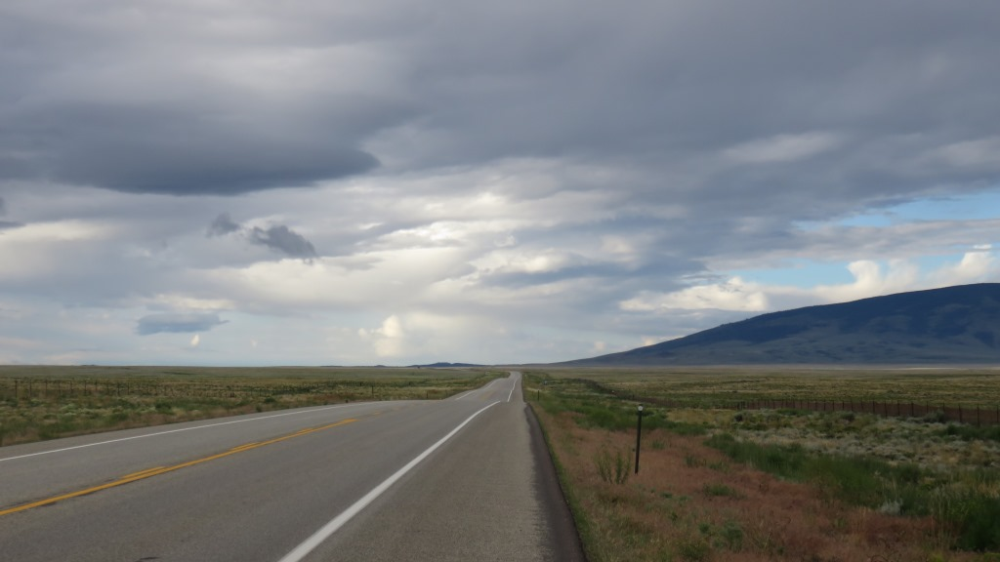
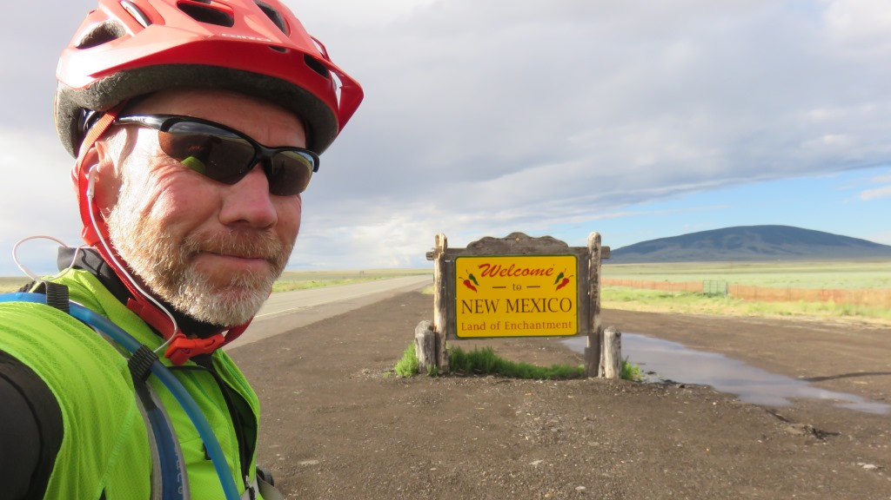
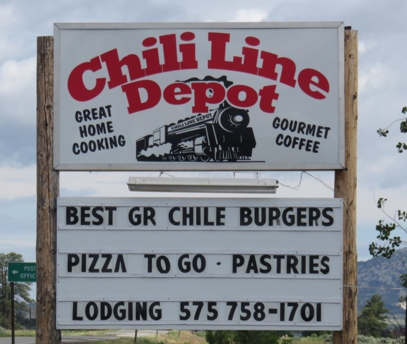
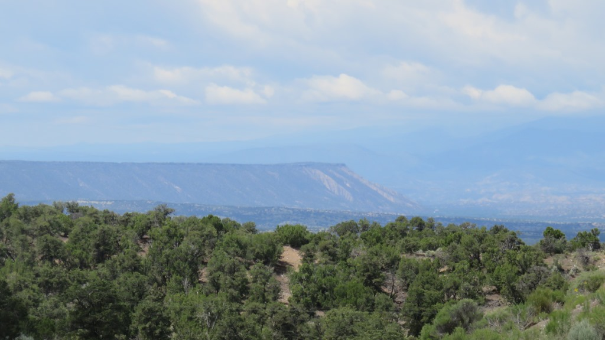
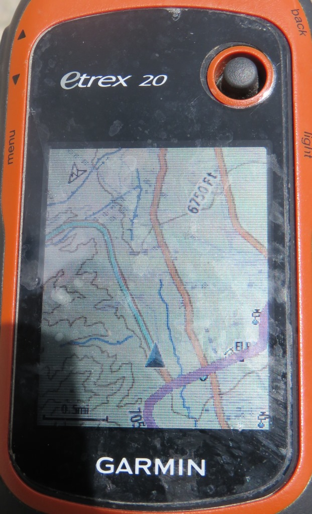
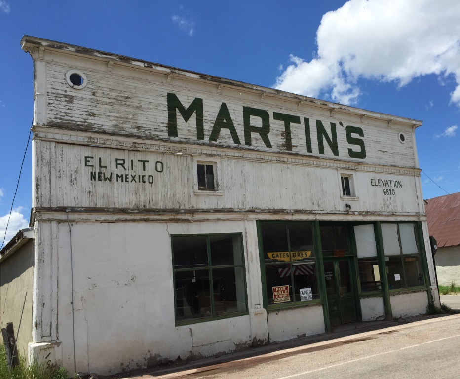
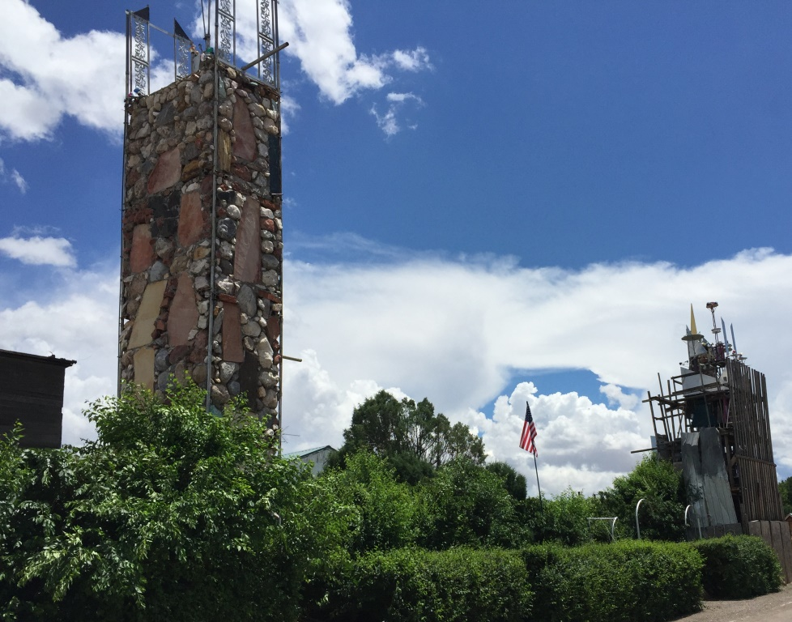
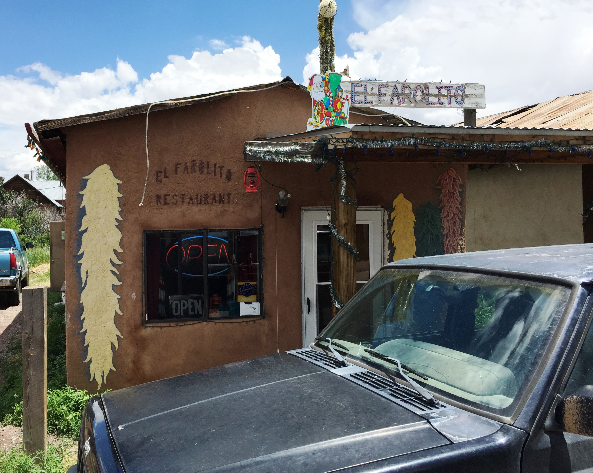
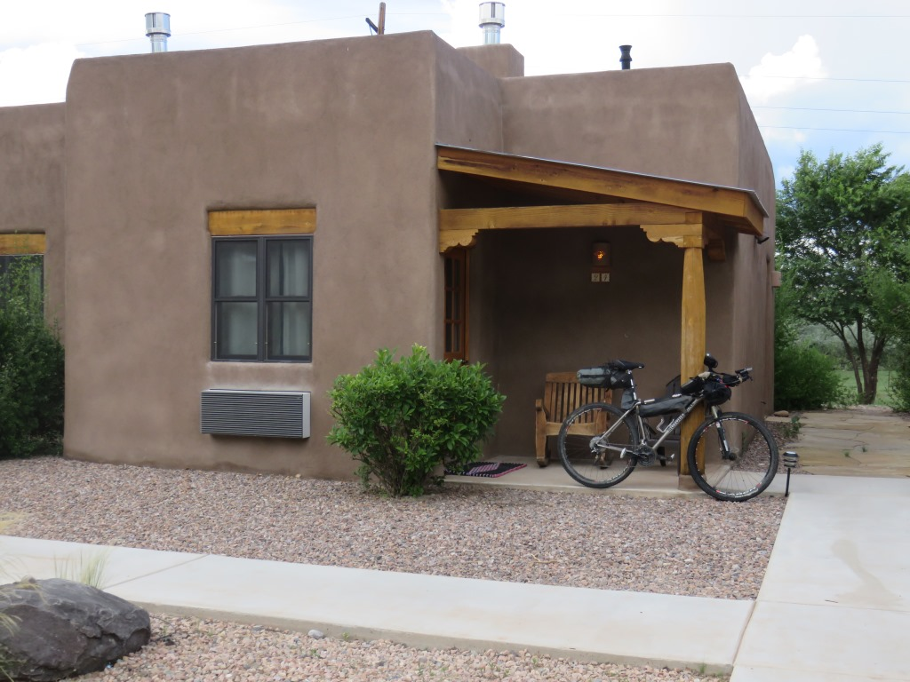

A Short ride to a new state
I started the day 5 miles from New Mexico. I got an early start and was there before 7am.


Morning clouds
Leaving Colorado the land was flatting out. In the picture below I knew I had to go around the ridge on the right but I didn't realize how far away it was. It actually merged into the mountains to the left for a small pass.

Leaving Colorado going southThe Land of Enchantment
Entering New Mexico was a big step. Even though it was early in the morning and I still had a lot of ground to cover I was excited to be there. 20 days earlier I'm not sure I could envision getting here. The sun had poked out and I was still over 8,000 feet. I even saw some clumps of snow along the road which were either from recent hail storms or the late season snow.

A satisfied JimTres Piedras, NM

captionAbout 30 miles from the start of my day I had a pleasant surprise when I came across the Chili Line Depot which was not on any of my maps or cheat sheats. I had a great Cinnamon Bun and then another. I hadn't expected any services for another 30 miles. A couple cups of coffee and some intel on the road ahead and I was on my way. I was off the route on US 285 and trying to rejoin the trail in the next couple hours.

Once off the highway the ups and downs began again
Riding toward the purple lineAfter being on the highway for the past two days I was looking forward to rejoining the CDMBR. This picture shows that i am just east of the purple line. When I reach it the blue triangle will follow along the purple line confirming I am on the route.
El Farolito in El Rito, NM

Lots of empty old buildings ...
... and interesting architecture
The only restaurant was worth the stopI rejoined the trail just before this little town El Rito, NM. More closed buildings then open but when it started to rain I decided to stop at the El Farolito. I had a nice burger and chips and spoke to the owner about the recent rains. It turned out that they had gotten two inches of rain the previous day and he thought that any of the gravel or clay roads would be a mess. This further reinforced my view that most of the rest of the trip would be on roads instead of trails.
Downhill into Abiqueu
Abiquiu Inn
text

Nicest room of the tripJuly 8 - 87 miles Antonito, CO to Abiquiu, NM
See full screen map To go places and do things that I've never done before – that’s what living is all about.Text by Jim O'Brien . Photographs by Jim O'BrienTD on Flickr.